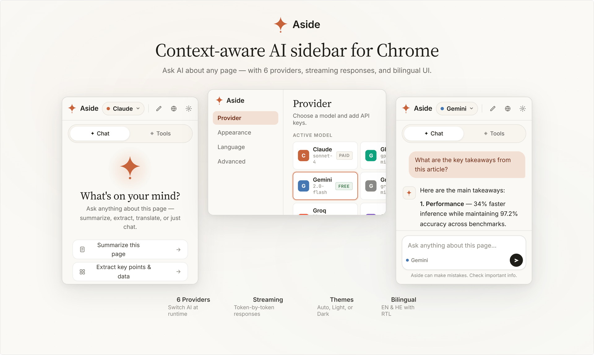
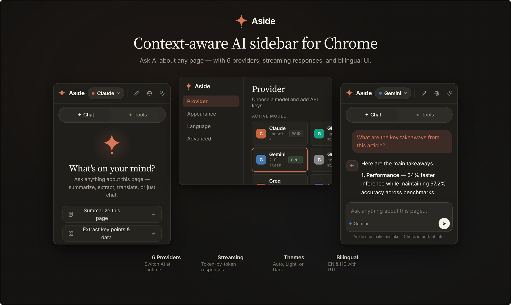
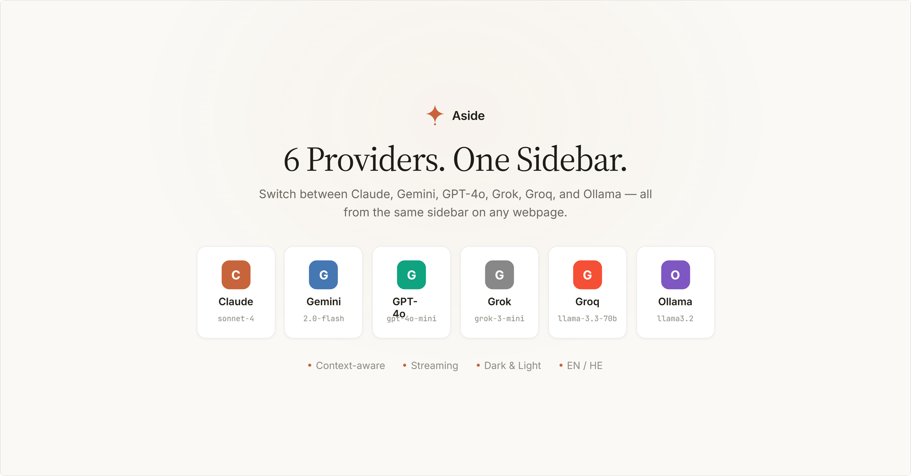
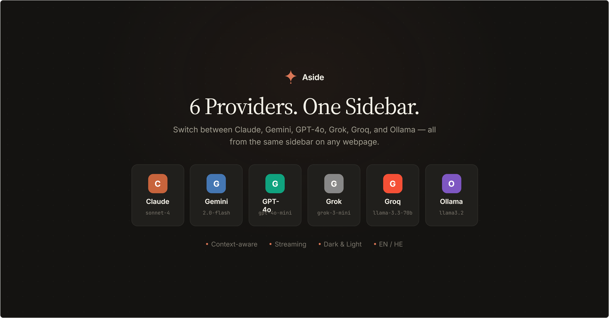
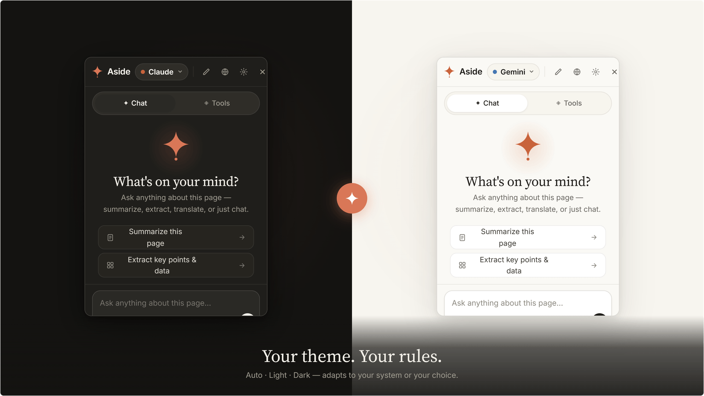

One keystroke
Alt+A on any page. The sidebar slides in, already knowing what you're reading.
A Chrome extension
AI that already knows the page you're on. Summarize, extract key points, translate, or just chat — with the provider you choose.
Coming to the Chrome Web Store · Free, MIT licensed.
You're reading something — an article, a paper, an API doc — and you want an AI's take, right now, without leaving the page.
Alt+A on any page. The sidebar slides in, already knowing what you're reading.
Claude, Gemini, GPT-4o, Grok, Groq, and local Ollama — switch in one click, no separate logins.
Summarize, extract key points, translate, find on page, or write your own prompt. No copy-paste.
Tokens arrive as the model thinks — cancel any time, edit, and ask again.
Light or dark — auto-matches your system. Eight UI languages — English, Hebrew, Spanish, French, German, Chinese, Arabic, Japanese — with full RTL support.
Conversations are saved per-site so you can pick up where you left off.


Add a key once in Settings → Provider. Keys are stored locally on your device, never sent anywhere except the provider that issued them. Switch any time, right from the sidebar.


A slim sidebar slides in on the right (or left — your choice). It already knows the page's language and what text you have selected.
Summarize, Key points, Translate, Explain, Find on page. Or write your own prompt. Answers stream in token-by-token.
The header dropdown swaps between Claude, Gemini, GPT-4o, Grok, Groq, and Ollama with one click. Your active provider persists between sessions.

API keys live in Chrome's encrypted storage and are sent only to the provider you chose, over HTTPS.
No analytics, no telemetry, no proxy server. Requests go straight from your browser to the model provider.
Page content is included only when you ask. Trimmed to 12,000 characters and sent with that single request.
Pick Ollama and nothing leaves your computer — your prompt and the page text stay on your machine.
storage.local on your device. They aren't synced to any cloud and can be cleared from Settings or by uninstalling the extension.chrome://extensions/shortcuts, find Aside, and set Toggle the AI sidebar to Alt+A (or any combo you like). 10 seconds.One-click install, automatic updates. We're preparing the store listing — check back shortly.
chrome://extensions and turn on Developer mode.manifest.json (the Aside-main folder you just unzipped — not a subfolder).chrome://extensions/shortcuts and set Alt+A for Toggle the AI sidebar — Chrome doesn't always auto-assign keys to unpacked extensions.No build step. No npm install. No accounts. Just unzip and load.
Open source. MIT-licensed. Free forever.